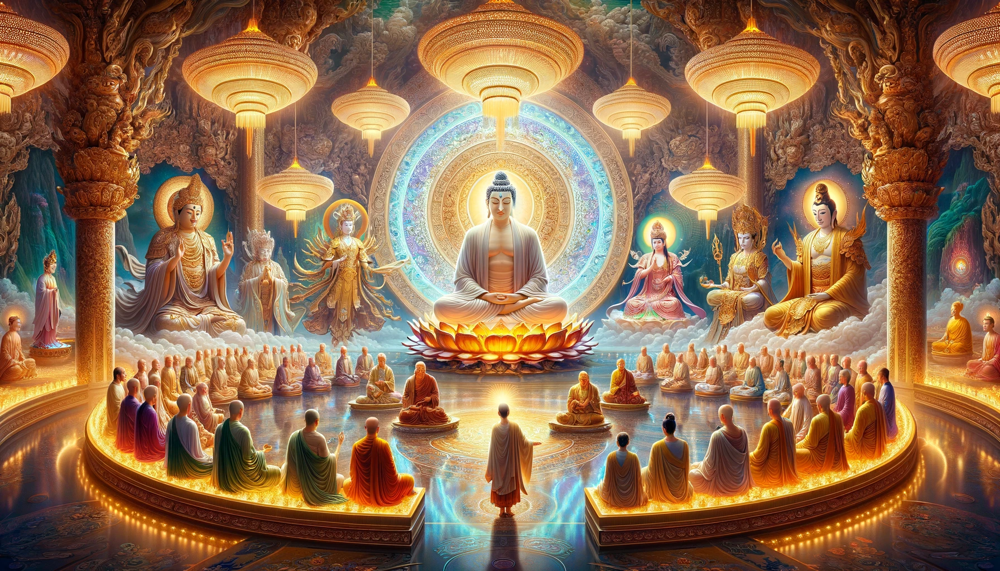

Chương 1: Quyết Định Luân Hồi
Trong điện ngọc uy nghiêm của thiên đình, ánh sáng từ hàng nghìn ngọn đèn sáng rực chiếu rọi lên những bức tường chạm trổ công phu. Các vị Phật và Bồ Tát tụ hội lại trong một buổi triều hội đặc biệt bàn luận về vận mệnh của thế gian và những khó khăn mà nhân loại đang đối mặt.
Trong điện ngọc uy nghiêm của thiên đình, các vị Phật và Bồ Tát ngồi với dáng vẻ thanh tịnh, thẳng lưng trên những tòa sen rực rỡ, ánh hào quang tỏa sáng xung quanh họ. Họ ngồi thành vòng bán nguyệt phía trước Đức Phật Thích Ca Mâu Ni tạo nên một khung cảnh huyền bí và trang nghiêm. Thích Ca Mâu Ni Phật ngồi trên một tòa sen lớn ở vị trí trung tâm, toát ra ánh hào quang rực rỡ và uy nghiêm. Bên tay phải của ngài là Đức Phật Từ Tôn, người dẫn dắt triều hội với dáng vẻ điềm tĩnh và uy nghi. Bên tay trái là Quán Thế Âm Bồ Tát, đại diện cho tấm lòng từ bi hỷ xả, che chở bảo hộ chúng sinh vượt qua gian nan khốn khổ.
Ở vị trí trung tâm trong vòng cung trước mặt Phật Tổ, Thủy Long Bồ Tát ngồi trên một tòa sen nhỏ, nổi bật với ánh hào quang màu xanh biếc khác biệt. Tay ngài đặt nhẹ nhàng trên đầu gối, thể hiện sự điềm tĩnh và tự tin. Ánh mắt kiên định và sáng ngời của ngài tỏa ra sự quyết tâm không lay chuyển.
Thủy Long Bồ Tát, với khả năng điều khiển nước và bảo vệ chúng sinh khỏi các tai họa liên quan đến biển cả, đã sống hàng ngàn năm trên thiên đình. Ngài luôn cảm thấy việc sống nơi thiên đình không đủ để thỏa mãn bản thân ngài. Ngài muốn dữ dội như những con sóng biển cả nhưng đôi lúc lại muốn lặng yên vỗ về bờ cát trắng. Ngài muốn trải nghiệm những khó khăn gian khổ lẫn những thành tựu công lao để cuộc sống ngài muôn màu muôn vẻ như biển kia rộng lớn mênh mông vô ngần.
Đức Phật Từ Tôn với giọng nói từ tốn và trầm ấm mở đầu cuộc thảo luận: “Các vị Bồ Tát và Phật hữu kính mến, hôm nay chúng ta hội ngộ để bàn về số phận của thế gian và những thử thách mà chúng sinh đang đối mặt. Ta nhận thấy rằng mặc dù đã có nhiều sự giúp đỡ từ chúng ta, nhân loại vẫn còn chìm đắm trong khổ đau và mê lầm.”
Ngồi bên cạnh Đức Phật Từ Tôn, Bồ Tát Di Lặc với nụ cười hiền từ lên tiếng: “Thưa Đức Phật, chúng ta đã luôn hướng dẫn và giúp đỡ chúng sinh từ xa nhưng dường như vẫn chưa đủ. Có lẽ chúng ta cần phải suy nghĩ về những cách tiếp cận mới.”
Tuy nhiên, không phải ai cũng đồng ý với quan điểm này. A Di Đà Phật, một trong những vị Phật quan trọng nhất, phản đối: “Trần gian là chốn tạm, là bể khổ. Việc chúng ta dấn thân vào luân hồi chỉ càng khiến chúng ta thêm ràng buộc và đau khổ. Chúng ta nên giữ vị trí của mình trên thiên đình, tiếp tục dẫn dắt chúng sinh từ xa.”
Nghe vậy, một trong số các vị Bồ Tát nói: “Đức Phật và các vị Bồ Tát kính mến, tôi tin rằng chỉ khi chúng ta trực tiếp trải nghiệm và đối mặt với những khó khăn của nhân loại, chúng ta mới có thể thực sự hiểu và giúp đỡ họ. Tôi quyết định sẽ luân hồi xuống trần gian để trực tiếp trải nghiệm và tìm cách cứu giúp chúng sinh trong bể khổ.”
A Di Đà Phật nhìn vị Bồ Tát đó với ánh mắt nghiêm nghị nói: “Ngươi không hiểu rằng luân hồi sẽ khiến ngươi thêm đau khổ sao? Trần gian là bể khổ, là nơi mê lầm và tội lỗi. Chúng ta từ đây mà hướng dẫn chúng sinh thoát vũng lầy chứ không tự mình sa vào vũng lầy. Có phải ngươi muốn luân hồi trải nghiệm?”
Vị Bồ Tát đó liền nghẹn lại, không nói thêm lời nào nữa vì chính ngài cũng biết những điều A Di Đà Phật nói là đúng.
Ngược lại, Thủy Long Bồ Tát kiên quyết đáp lại: “Ta không thấy trần gian là vũng lầy, ta thấy đó là nơi rèn luyện bản tâm. Thiên đình chỉ là nơi nghỉ ngơi cho những kẻ lười biếng. Ta tin rằng trong bể khổ, trí tuệ và sức mạnh sẽ được rèn luyện và tỏa sáng. Chỉ có trải nghiệm thực tế mới giúp ta thực sự hiểu và giúp đỡ chúng sinh.”
Trước sự quyết tâm của Thủy Long Bồ Tát, một số vị Phật và Bồ Tát khác bày tỏ sự phản đối. Bồ Tát Thích Ca Mâu Ni, vị Phật đã từng trải qua nhiều kiếp luân hồi, lên tiếng: “Thủy Long, ngươi có biết rằng quyết định này sẽ mang lại nhiều gian khổ cho ngươi không? Trần gian không phải là nơi dễ dàng để sống. Hãy suy nghĩ kỹ trước khi quyết định.”
Thủy Long Bồ Tát đáp lại: “Chính vì trần gian đầy gian khổ nên ta mới muốn luân hồi xuống đó. Ta tin rằng sự gian khổ chính là phương tiện để rèn luyện và hoàn thiện bản thân. Nếu ta không dấn thân vào đó, làm sao ta có thể thực sự giúp đỡ chúng sinh?”
Bồ Tát Diêm La, người cai quản địa ngục và tin vào sự trừng phạt và kiểm soát để duy trì trật tự, nói thêm: “Thủy Long, nếu ngươi luân hồi, ngươi sẽ phải đối mặt với nhiều đau khổ và cám dỗ. Ngươi có chắc mình đủ mạnh mẽ để vượt qua không? Chúng ta ở đây có thể hướng dẫn và bảo vệ chúng sinh từ xa mà không cần phải tự mình chịu đựng.”
Thủy Long Bồ Tát không ngần ngại trả lời: “Ta tin rằng sự mạnh mẽ không chỉ đến từ khả năng tránh né đau khổ mà còn từ việc đối mặt và vượt qua nó. Ta sẵn sàng chấp nhận mọi khó khăn để giúp đỡ chúng sinh. Ta sẽ chứng minh rằng ngay cả trong khổ đau, lòng từ bi và dũng cảm vẫn có thể thắng thế.”
Trong khi đó, Bồ Tát Quán Thế Âm, người nổi tiếng với lòng từ bi và khả năng lắng nghe tiếng kêu cứu của chúng sinh, bày tỏ sự ủng hộ: “Thủy Long, ta hiểu lòng ngươi. Nếu ngươi thực sự muốn trải nghiệm và giúp đỡ chúng sinh, ta sẽ luôn ủng hộ và giúp đỡ ngươi từ xa. Hãy đi và chứng minh cho mọi người thấy.”
Trong khi các vị Phật và Bồ Tát thảo luận, ba vị Phật phản đối mạnh mẽ nhất là A Di Đà, Diêm La và Địa Tạng. Mỗi vị Phật đều có tính cách và lối sống khác biệt.
A Di Đà Phật, một vị Phật với thân hình mập mạp, râu ria không bao giờ cạo sạch, trông rất lôi thôi. Mặc dù vậy, ông là người cầu toàn trong mọi việc mình làm và luôn hướng tới sự hoàn hảo. Ông ta rất giỏi trong việc kéo mối quan hệ và nịnh nọt các vị thần khác để đạt được mục tiêu của mình. Quan điểm của ông là Phật là bề trên, là sự hoàn hảo, không thể cùng người ở trần gian sinh sống vì lũ đó có dục vọng thấp kém. Dù cho lũ đó có tu đến cực hạn thì cũng nhân vô thập toàn, luôn tồn tại những thứ xấu xí.
Diêm La Bồ Tát, một vị thần cai quản địa ngục, trông có vẻ ngay thẳng và nghiêm nghị nhưng lại thích làm những việc trong bóng tối. Ông tin vào sức mạnh của sự trừng phạt và kiểm soát để duy trì trật tự. Diêm La luôn tỏ ra kiên định và không bao giờ nhân nhượng trong các quyết định của mình. Quan điểm của ông rất biến thái, ông tin rằng nhân chi sơ tính bản ác, phải trừng phạt những thối xấu bằng tra tấn cực hình.
Địa Tạng Bồ Tát, một vị Bồ Tát với vẻ ngoài nghiêm nghị và khắc khổ, luôn tin vào việc cứu độ chúng sinh qua sự hy sinh và khổ hạnh. Ông ta rất giỏi trong việc thuyết phục và dùng lời nói để kiểm soát tình hình. Mặc dù luôn tỏ ra hiền hòa, nhưng Địa Tạng cũng không ngần ngại sử dụng những biện pháp cứng rắn khi cần thiết. Ông tin rằng càng điệu thấp thì càng được lòng, vì ai cũng muốn che chở cho sự yếu đuối. Nhưng ông cũng đặt ra giới hạn cho điệu thấp của mình, đó là phải cao hơn lũ người hèn mọn ở trần gian.
Trước khi rời khỏi thiên đình, Thủy Long Bồ Tát bày tỏ lòng biết ơn đối với những vị ủng hộ và tạm biệt các vị Phật và Bồ Tát. Ngài biết rằng con đường phía trước sẽ đầy thử thách, nhưng ngài cũng hiểu rằng chỉ có trải qua gian khổ ngài mới có thể thực sự hiểu và giúp đỡ chúng sinh.
Bồ Tát Thủy Long đã tuyên bố:
"Dục thiên bất yểm ngã nhãn
Yếu địa bất mai ngã tâm.
Dục trí tuệ tựa thương hải
Yếu lực lượng tựa lôi đình."
Tạm dịch: Ta muốn thiên này không che được ta mắt, đất này không vùi được ta tâm. Ta muốn trí tuệ mênh mong như biển cả, sức mạnh sánh tựa sấm vang xa.
Nói xong, Thủy Long Bồ Tát biến hóa thành một luồng ánh sáng xanh biếc lao xuống trần gian, bắt đầu một cuộc hành trình mới. Ngài không biết mình sẽ đầu thai thành ai, nhưng ngài tin rằng quyết định luân hồi này sẽ mang lại cơ hội để rèn luyện bản thân và thực sự giúp đỡ chúng sinh trong bể khổ của trần gian.